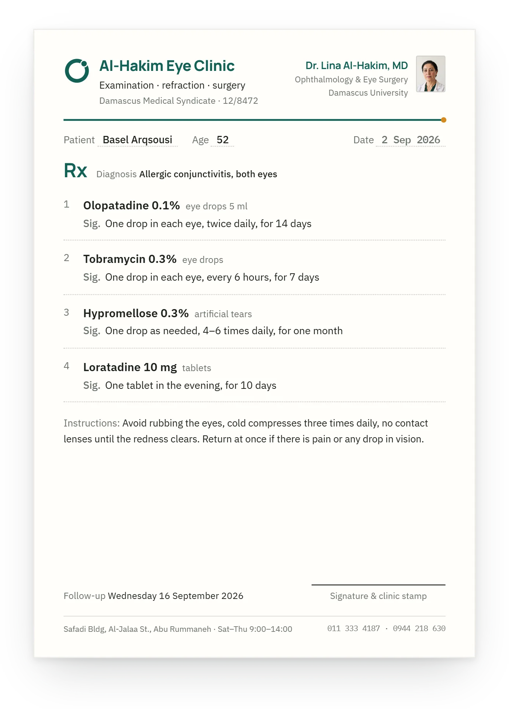
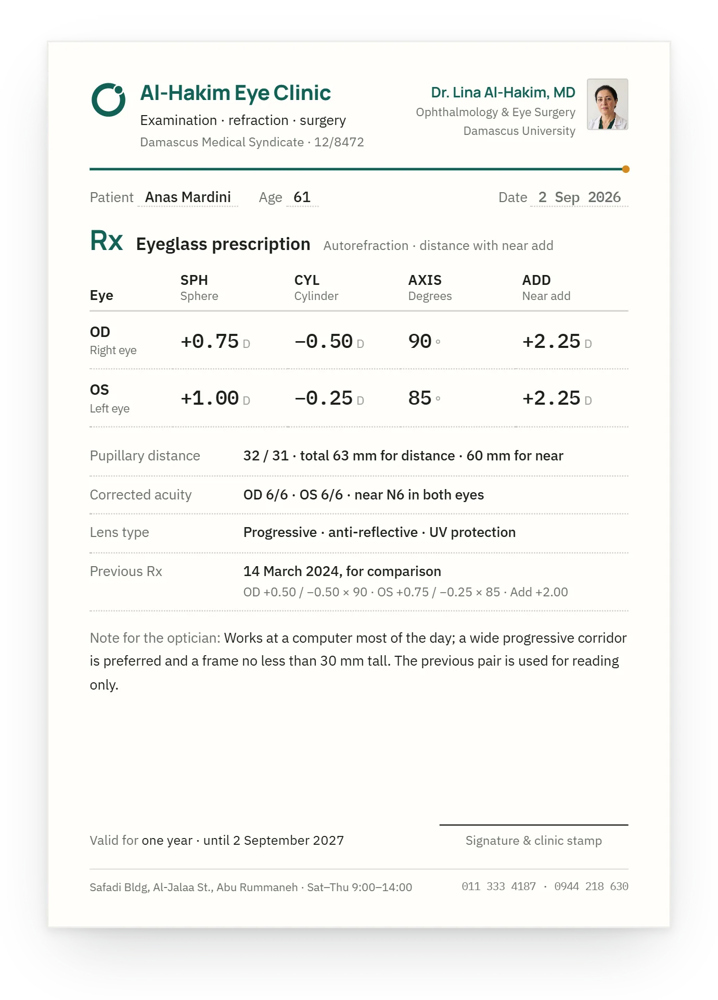

case 08 · kashf
KASHF
Kashf. A clinic that prints on paper and survives the blackout.
movement 01 · the print
- prescription · Basel Araqsousi
- eyeglasses Rx · Anas Mardini

-
01 · A5 · 148 × 210 mm
The visit is typed on the screen; the patient leaves with paper. The prescription prints on A5 with the clinic's own letterhead.
-
02 · A5 · OD / OS
The eye clinic prints one more: the eyeglasses Rx, signed diopters and all, from the same letterhead.


the story
An offline desktop system for one private clinic in Syria: the day list, a patient file that saves itself as it is typed, a prescription that prints on A5, and billing in pounds and dollars, never converted.
about the product
Kashf is a desktop system for private-practice doctors in Syria: a day list, a patient file with a visit timeline that saves itself as it is typed, a prescription that prints on A5 with the clinic's letterhead, an eyeglasses Rx for eye clinics, and billing in pounds and dollars side by side. Offline, encrypted, one app for every specialty.
the challenge
- 01
Every specialty is a different visit: a cardiologist and an ophthalmologist need different fields, scores and prints, from one app.
- 02
Paper is what the patient leaves with: the A5 prescription and the eyeglasses Rx have to print right, letterhead and all, without a cloud.
- 03
Two to six hours of power a day: the visit saves itself as it is typed and the file survives the cut.
the approach
A schema-driven template engine, one field schema per specialty and one snapshot per visit, with scores that never block saving; an encrypted SQLite file; diacritic-insensitive search; and the printed documents built as documents of their own.
my role
Product designer, researcher and the only engineer: the clinical specification for 21 specialties, the PRD, the brand, the app and its print templates.
movement 02 · the day and the file
The day and the file
At 11:42 the day list shows eight visits: four done, one in the exam room, two waiting, one not yet arrived. Tariq Zein al-Din's row is done and flagged for follow-up; in his file the next visit is already set, 2 December 2026. One amber dot in each place, and the thread between them.


Paper first. Power-cut proof. One app for every specialty.
- 01Ophthalmology
- 02Dentistry
- 03Internal medicine
- 04Cardiology
- 05Pediatrics
- 06Obstetrics and gynecology
- 07Dermatology
- 08Neurology
- 09Orthopedics
- 10ENT
- 11Urology
- 12Endocrinology and diabetes
- 13Pulmonology
- 14Nephrology
- 15Oncology
- 16Psychiatry
- 17Rheumatology
- 18Gastroenterology
- 19Nutrition
- 20General practice
- 21Other
21 specified · the eye clinic built first
movement 03 · the eye clinic's own screen
The eye clinic's own screen
Anas Mardini, 61, measured at 09:38: OD +0.75 / −0.50 × 90, OS +1.00 / −0.25 × 85, add +2.25, progressive lenses. The previous Rx from March 2024 sits in the rail for comparison, and one button puts it on A5.
 +0.75 / −0.50 / 90°: signed diopters, the axis on a dial
14 March 2024, kept for comparison
+0.75 / −0.50 / 90°: signed diopters, the axis on a dial
14 March 2024, kept for comparison
/ outcomes
specialties specified, the eye clinic built first
one field schema each, one visit screen each
currencies side by side, never converted
pounds and dollars, each its own balance
hours of power a day it is built for
the visit saves itself as it is typed
case 08 · complete
the field of the next chapter floods the screen